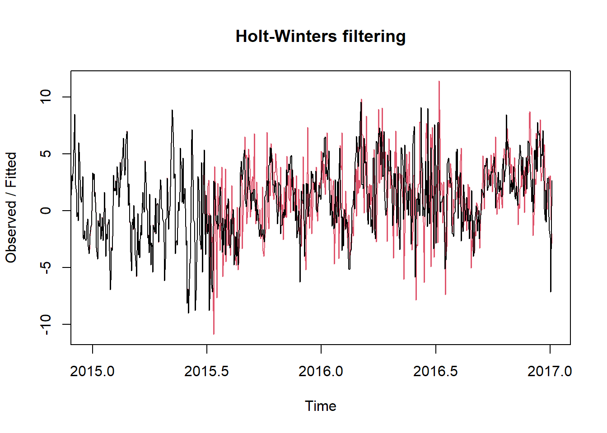
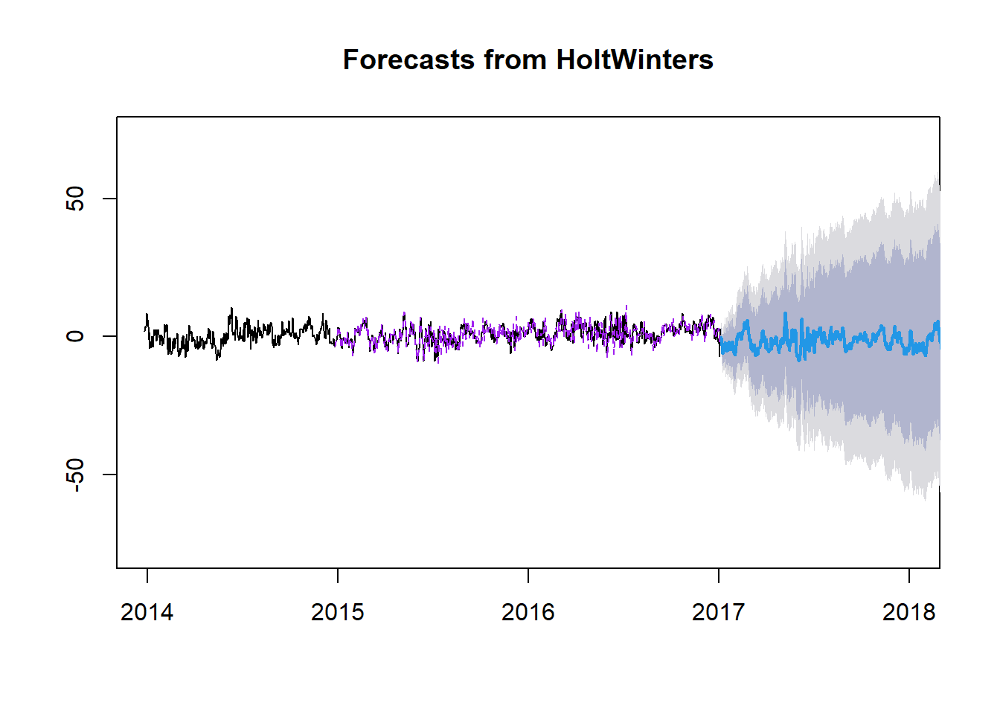
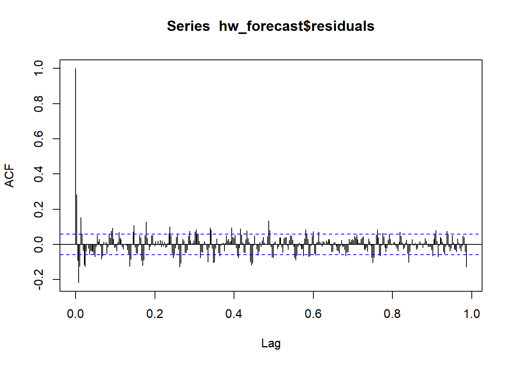
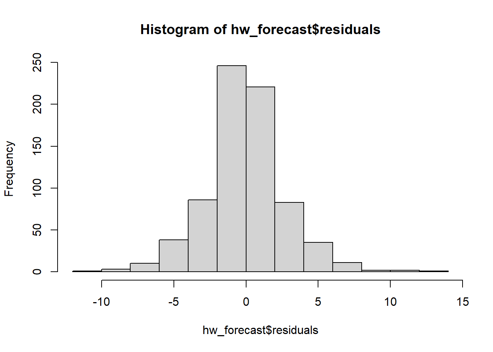

4 Holt Winters
El método de Holt-Winters es una técnica de pronóstico ampliamente utilizada en análisis de series temporales que aborda la complejidad de los datos con componentes de nivel, tendencia y estacionalidad. Al incorporar tres parámetros principales -alfa (α), beta (β) y gamma (γ)-, el modelo de Holt-Winters realiza un triple suavizado exponencial que permite adaptarse de manera dinámica a medida que nuevos datos se van incorporando.
El parámetro alfa (α) controla el suavizado del componente de nivel, mientras que el beta (β) influye en el suavizado de la tendencia y el gamma (γ) determina el suavizado de la estacionalidad. Estos parámetros son cruciales para establecer cómo se ponderan y suavizan las diferentes componentes de la serie temporal, permitiendo que el modelo capture eficazmente las variaciones en los datos a lo largo del tiempo.
Además de estos parámetros, el método de Holt-Winters también considera la longitud de la estacionalidad (m), que indica la cantidad de períodos en un ciclo estacional completo, mejorando así la capacidad del modelo para modelar y prever patrones estacionales en los datos.
Aunque el modelo de Holt-Winters es capaz de modelar la mayoría de las características de una serie temporal, siempre habrá variaciones residuales no sistemáticas o ruido que no pueden ser explicadas por el modelo. Estos residuos son una parte natural de cualquier serie temporal y deben ser evaluados para comprender la precisión y las limitaciones del modelo.
4.1 Validación del método Holt-Winters
Para aplicar con éxito el método de Holt-Winters a esta serie de tiempo, es fundamental verificar varios aspectos:
Componentes de la serie: Es imprescindible que nuestra serie exhiba al menos dos de las tres componentes principales: nivel, tendencia y estacionalidad. Tras un análisis previo, hemos identificado tanto la tendencia como la estacionalidad en nuestra serie temporal.
Patrones estacionales: Hemos confirmado la presencia de estacionalidad en nuestra serie mediante la prueba de Kendall, observamos patrones claros y repetitivos al graficar los datos, particularmente en ciclos anuales y de forma aditiva.
Estabilidad y regularidad: Nuestra serie temporal muestra un nivel adecuado de estabilidad y regularidad a lo largo del tiempo, sin exhibir variaciones extremas o fluctuaciones erráticas.
Cantidad de datos disponibles: Contamos con una cantidad suficiente de datos para aplicar el método de Holt-Winters. Nuestra serie temporal abarca 1576 registros desde el año 2013 hasta el 2017, con una frecuencia diaria.
Datos completos: La serie temporal no presenta valores faltantes; cada uno de los 1576 registros diarios contiene información válida.
Estacionariedad: Aunque inicialmente nuestra serie no era estacionaria según el test de Dickey-Fuller, aplicamos una diferenciación una sola vez para estabilizar la media mientras manteníamos la estacionalidad y la tendencia.
Teniendo en cuenta estos puntos, nuestra serie de tiempo parece adecuada para aplicar el método de Holt-Winters y realizar un análisis detallado.
4.2 Aplicación
Como se mencionó anteriormente, el método de Holt-Winters cuenta con varios parámetros que influyen en su desempeño. Si bien se podria aplicar el método directamente a nuestra serie temporal utilizando la función HoltWinters con los parámetros predeterminados, en nuestro caso optaremos por otra estrategia. Desarrollaremos una función que nos ayude a identificar los valores óptimos de los parámetros, con el objetivo de minimizar el error en nuestras predicciones. Es importante considerar que estos parámetros pueden variar en un rango de 0 a 1.
4.2.1 Optimizar parámetros
# La función toma dos argumentos: un vector que contiene los parámetros alfa, beta y gamma, y la serie de tiempo para la cual queremos calcular el error.
error_func <- function(params, serie_tiempo) {
alpha <- params[1]
beta <- params[2]
gamma <- params[3]
# Ajusta el modelo Holt-Winters
hw_model <- HoltWinters(serie_tiempo, alpha = alpha, beta = beta, gamma = gamma)
# Calcula el error cuadrático total
error <- sum((serie_tiempo - fitted(hw_model))^2)
return(error)
}# En primer lugar definimos el rango para los parámetros alpha, beta y gamma.
lim_inf <- c(0, 0, 0)
lim_sup <- c(1, 1, 1)# Se utiliza la función "optim" para encontrar los valores óptimos de los parámetros alpha, beta y gamma, utilizando el método "L-BFGS-B" que es uno de los métodos disponibles en R para la optimización con restricciones.
optimizacion <- optim(c(0.5, 0.5, 0.5), error_func, serie_tiempo = ts_data_dif, lower = lim_inf, upper = lim_sup, method = "L-BFGS-B")## [1] 0.5057046 0.0000000 0.8675986Como podemos evidenciar los valores óptimos son:
Alpha = 0.56. Indica que se le da más peso a las observaciones recientes para la estimación del nivel.
Beta = 0.00. Indica que no se está considerando la componente de tendencia en el modelo Holt-Winters.
Gamma 0.86. Indica que se da un peso significativo a las observaciones recientes para la estimación de la estacionalidad.
4.2.2 Modelo Holt-Winters
# Ajustar el modelo HoltWinters con los parámetros definidos anteriormente.
hw_model <- HoltWinters(ts_data_dif, alpha = parametros[1], beta = parametros[2], gamma = parametros[3])
plot(hw_model)
- Como podemos observar, parece que el modelo se ajusta bien a nuestra serie temporal, capturando tanto la tendencia como la estacionalidad. No obstante, más adelante evaluaremos a fondo nuestro modelo.
4.3 Predicciones
Utilizando la función forecast, se generan predicciones de nuestro modelo Holt-Winters con niveles de confianza del 80% y del 95%.
hw_forecast <- forecast(hw_model,level=c(80,95))
# Visualizar las predicciones
plot(hw_forecast, xlim = c(2014, 2018))
lines(hw_forecast$fitted, lty=2, col="purple")
Como se indica, las líneas negras representan los datos de nuestra serie temporal. Las líneas moradas representan el modelo ajustado. Las líneas azules representan las predicciones para los próximos 30 días. Las áreas grises representan los intervalos de confianza asociados con estas predicciones. Como se puede observar, los intervalos se desbordan, lo que indica una alta incertidumbre en nuestras predicciones.
4.4 Evaluación del modelo
La librería forecast también evalúa la calidad de nuestras predicciones al calcular la diferencia entre los valores observados y los valores predichos para cada punto de datos. Estos residuos se incorporan a nuestro modelo de pronóstico como $residuals. Nuestro objetivo es verificar la ausencia de correlaciones entre los errores de pronóstico.Para evaluar esto, utilizamos la función acf para analizar la correlación de los residuos entre puntos separados en el tiempo.
Además, la prueba de Ljung-Box puede proporcionar información sobre estas correlaciones. Un valor p mayor que 0.05 indica una probabilidad del 95% de que los residuos sean independientes.
Finalmente, es útil examinar el histograma de los residuos para verificar su distribución. Si los residuos están notablemente sesgados, es posible que nuestro modelo esté consistentemente sobrestimando o subestimando en una dirección específica.

##
## Box-Ljung test
##
## data: hw_forecast$residuals
## X-squared = 60.018, df = 1, p-value = 9.437e-15
- De acuerdo a los resultados obtenidos mediante el análisis de la función acf, la prueba de Ljung-Box y el histograma, se evidencia la presencia de autocorrelación significativa en los residuos del modelo Holt-Winters. Esto sugiere que el modelo podría no estar capturando completamente la estructura temporal de los datos y podría necesitar ajustes o mejoras adicionales.